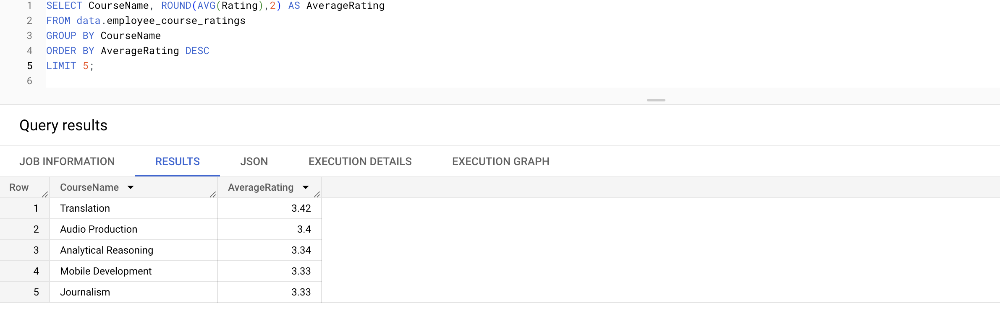
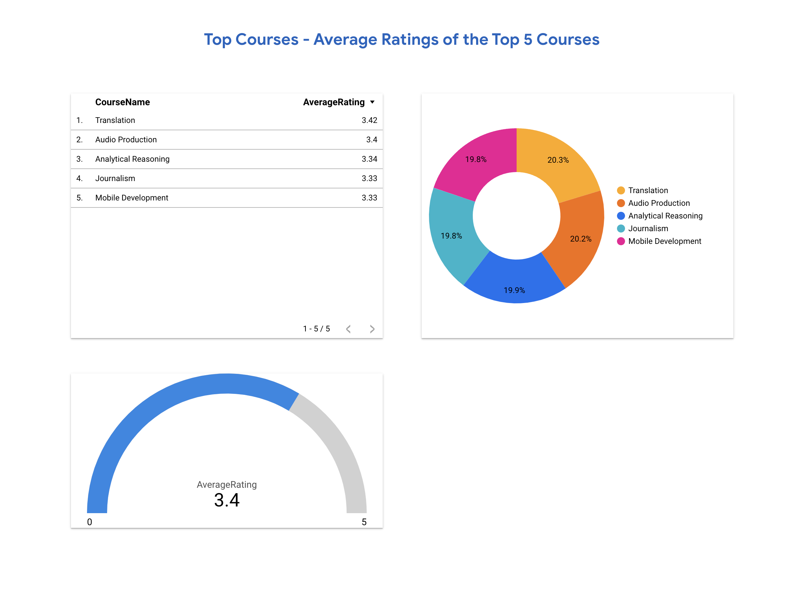
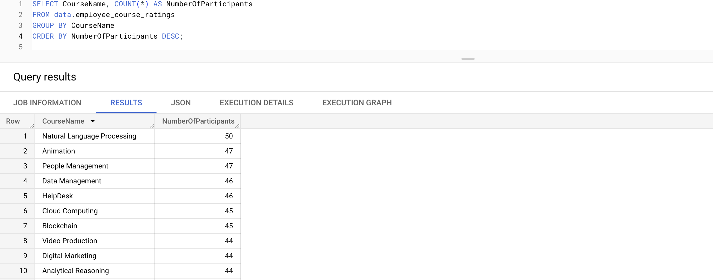
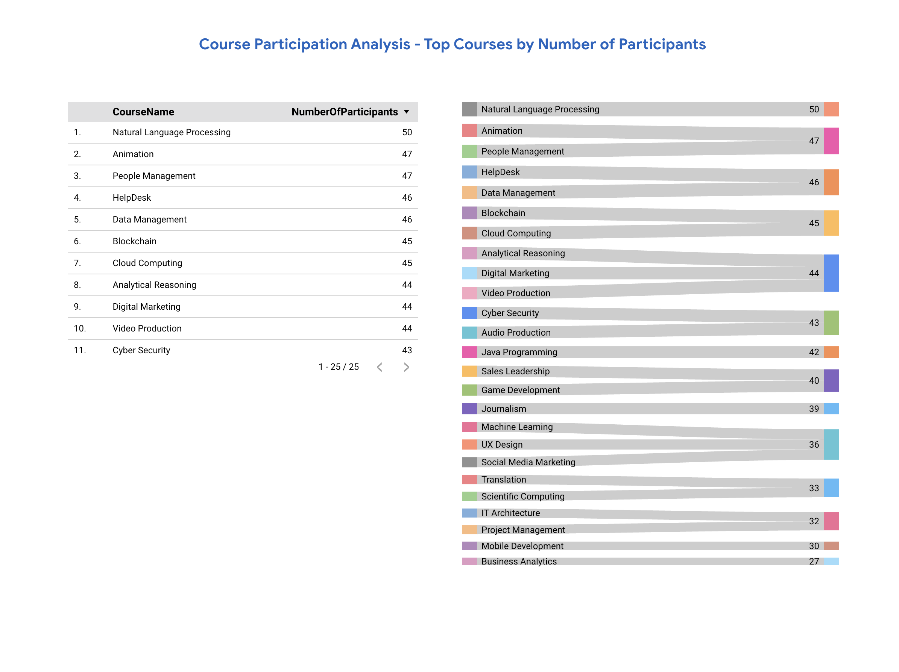
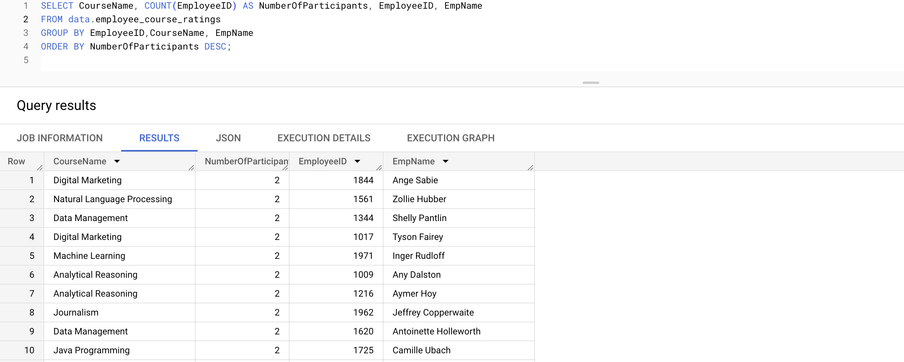
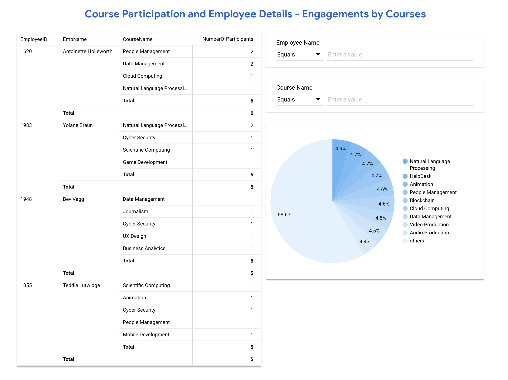
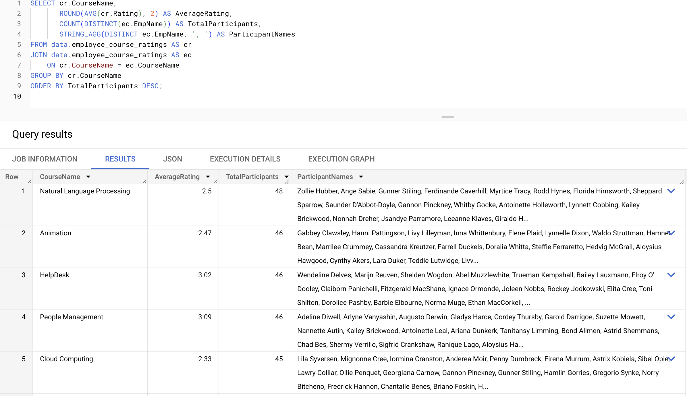

HR Data Analysis and Visualization
SQL, BigQuery, Looker
In this project, I have conducted data analysis and visualization on a Human Resources (HR) dataset to gain valuable insights. The HR dataset used in this project comprises employee-related information, including training course ratings, course participation, and employee details.
Dataset Overview
The HR dataset consists of two tables, each offering critical information about the employees, training courses, and their interactions. Here is a brief overview of the key tables:
employee_course_ratings: This table records the feedback and ratings provided by employees for various training courses they have attended.
employee_attrition: This table contains details about employees' work experiences, attrition status, and various performance metrics.
Project Scope and Objectives
The main scope of this HR Data Analysis and Visualization project includes analyzing course participation and employee details, analyzing course participation, and identifying the top courses with the highest average ratings. The specific objectives of the project are as follows:
Course Participation and Employee Details Analysis:
I analyzed the HR dataset to determine how many employees have participated in each course and their individual details. This analysis aims to provide a comprehensive view of employee participation in various training courses.
Course Participation Analysis:
I performed an analysis of the HR dataset to count the number of participants for each course. The results will identify the most popular courses within the organization, providing valuable insights into employee training preferences.
Top 5 Courses - Average Ratings:
I calculated the average rating for each course in the HR dataset and select the top 5 courses with the highest average ratings. This analysis aims to highlight the most successful courses according to employee evaluations.
The project intends to offer valuable insights to HR professionals and decision-makers by achieving these objectives. The analysis and visualization of course participation, popularity, and average ratings will better understand employee needs, preferences, and training effectiveness, ultimately facilitating data-driven decisions to optimize HR processes and enhance employee engagement.
Data Analysis and Visualization Tools
To achieve the project's objectives, I utilized SQL queries, BigQuery, and Looker for data analysis and visualization. SQL queries were employed to extract relevant data from the HR dataset, BigQuery facilitated handling large-scale data processing, and Looker was used to create interactive and visually appealing reports.
By presenting the results in the form of graphs, charts, and data summaries, this portfolio project aims to provide HR stakeholders with actionable insights for informed decision-making and optimizing employee engagement and performance within the organization.
Note: Employees can take a course multiple times.
Top Courses - Average Ratings of the Top 5 Courses
Based on the average ratings given to courses, which are the top 5 courses with the highest average ratings, and what are their ratings?


Course Participation Analysis - Top Courses by Number of Participants
Which courses have the highest number of participants, and what are their participant counts?


Course Participation and Employee Details - Engagements by Courses
Which courses have the highest number of participants, and how many individual employees participated in each course?


Participant List
Which courses have the highest number of participants, what are their average ratings, and who are the individual participants in each course?

Conclusion
I explored the Human Resources (HR) dataset using SQL queries and visualization techniques in this data set. Throughout the analysis, I addressed three key aspects related to course participation and ratings:
Course Participation and Employee Engagement
I analyzed course participation individually, understanding how many employees participated in each course and examined their details.
Course Popularity Analysis
I explored the popularity of courses by counting the number of participants for each training session. This analysis provided a clear understanding of the most popular courses within the organization, shedding light on employee training preferences and areas of interest.
Top Courses - Average Ratings
By calculating the average rating for each course, I identified the top 5 courses with the highest average ratings. These courses received positive employee feedback, indicating their effectiveness and success in meeting employee expectations.
My Other Projects
You can access my other projects by clicking on the button below.